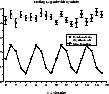
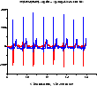
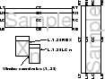
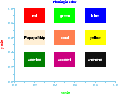
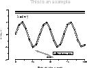

plt Tutorial and Cookbook
George B. Moody
Massachusetts Institute of Technology
Cambridge, Massachusetts





Copyright ©2001-2005 George B. Moody.
This copy of this book was prepared on 26 April 2005.
plt was originally written by Paul Albrecht, and is currently
maintained by George Moody (george@mit.edu). The most recent
version of plt, and of this book, can always be obtained from
PhysioNet (http://www.physionet.org/); see
appendix F, page ![[*]](crossref.png) , for
details.
, for
details.
Permission is granted to make and distribute verbatim copies of this book provided that the copyright notice and this permission notice are preserved on all copies.
Permission is granted to copy and distribute modified versions of this book under the conditions for verbatim copying, provided also that the entire resulting derived work is distributed under the terms of a permission notice identical to this one.
Permission is granted to copy and distribute translations of this book into another language, under the above conditions for modified versions.